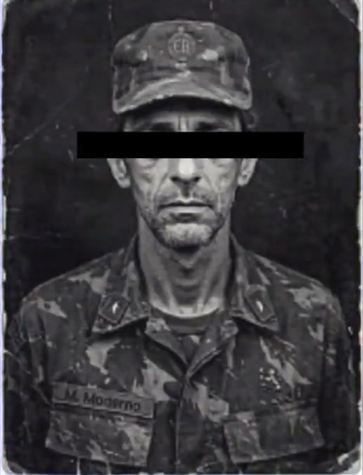

Marcos Moderno Borges
Major, Exército Brasileiro
Oficial de infantaria da selva e líder do Destacamento Lontra, a última patrulha que sua carreira produziu. Entre 1988 e 1994 conduziu ou integrou cinco operações de reconhecimento na Amazônia. Desapareceu com a equipe em agosto de 1994, e a causa do desaparecimento permanece sem explicação conclusiva.
Dados pessoais

NÃO ANEXADA
ESCANEADA DE CARTEIRA FUNCIONAL, 1993
| NOME COMPLETO | Marcos Moderno Borges |
|---|---|
| ALCUNHA | Capitão Moderno Pai |
| PATENTE | Major do Exército Brasileiro |
| FUNÇÃO | Líder do Destacamento Lontra |
| NASCIMENTO | 14/02/1958 |
| NATURALIDADE | Belém, Pará |
| IDADE NO DESAPARECIMENTO | 36 anos |
| DESAPARECIMENTO | 18/08/1994 |
| FILHO | João Carlos Moderno Borges |
| SITUAÇÃO ATUAL | Desaparecido · identificação forense pendente |
Histórico do militar
Biografia
INFÂNCIA E ORIGEM
Marcos Moderno Borges nasceu em 14 de fevereiro de 1958, em Belém, no Pará. Era filho de um comerciante de madeira que mantinha depósito às margens do porto da cidade, e cresceu entre rios, barcos e feiras de produtos da floresta. Desde a adolescência acompanhava o pai em viagens ao interior do estado, o que lhe deu familiaridade com a região e com os sistemas de navegação fluvial que mais tarde usaria em missões militares.
FORMAÇÃO MILITAR
Ingressou na Academia Militar das Agulhas Negras em 1976 e se formou em 1979 na arma de Infantaria. Como tenente, serviu em unidades de selva na região Norte e, entre 1982 e 1984, foi instrutor no Centro de Instrução de Guerra na Selva, em Manaus. Segundo os registros de instrução, era considerado rigoroso com cartas e mapas, e tinha o hábito de revisar pessoalmente toda rota antes de uma saída.
CARACTERÍSTICAS
- Conhecido pela calma em situações de crise e pela preferência por decisões tomadas com poucos subordinados presentes.
- Tratava os homens sob seu comando pelo nome, e manteve contato com parte deles após a reforma.
- Não consumia álcool durante missões e exigia o mesmo dos integrantes da equipe.
- Fotografava as paisagens de cada área de operação e guardava os negativos em caixas numeradas.
- Aparentava cerca de 48 anos ao final da carreira, embora tivesse 36 em 1994. Os subordinados atribuíam a aparência ao desgaste físico das caminhadas prolongadas nas operações de selva, que lhe marcavam o rosto e reduziam o peso corporal.
Trajetória na carreira
A progressão de Marcos seguiu o padrão de oficiais de selva da época: poucos postos em unidades administrativas e longos períodos em missões de reconhecimento. A tabela abaixo resume as movimentações documentadas.
| ANO | POSTO / FUNÇÃO | UNIDADE / LOCAL |
|---|---|---|
| 1979 | 2º Tenente | Formação em Infantaria, AMAN |
| 1980–1981 | Tenente de Infantaria | Unidade de selva, Roraima |
| 1982–1984 | Tenente, instrutor | CIGS, Manaus |
| 1985 | Capitão | Batalhão de Infantaria de Selva, Pará |
| 1986–1987 | Capitão, adjunto de operações | Comando de Fronteira, Amazonas |
| 1988–1994 | Capitão, depois Major (1993) | Destacamento de reconhecimento, Amazônia Ocidental |
| 1994 | Major, líder de patrulha | Destacamento Lontra |
Operações em que esteve envolvido
As cinco operações abaixo compõem o histórico de Marcos entre 1988 e 1994. Cada uma foi registrada em documento próprio. As datas e responsabilidades seguem a cronologia consolidada.
Reconhecimento em mata fechada após a identificação de transmissões de rádio sem origem conhecida. Marcos integrou a equipe de localização. A estação transmissora não foi encontrada.
PRIMEIRO CONTATO COM TRANSMISSÕES INEXPLICADASReconhecimento de uma instalação abandonada, não registrada nos mapas da região. Documentos encontrados faziam referência a atividades anteriores à construção do local.
ESTRUTURA DESCONHECIDAVerificação de movimentações em instalação que deveria estar desativada. Registros com datas incompatíveis com o funcionamento oficial e referências a localidades fora dos mapas.
REGISTROS FORA DOS SISTEMAS CONVENCIONAISAnálise de fotografias, gravações e documentos de procedência desconhecida. Marcos foi associado à análise do material, onde se identificou a repetição de códigos entre documentos sem relação oficial.
LIGAÇÃO DOCUMENTAL ENTRE CASOS ISOLADOSPatrulha de vigilância em região amazônica não mapeada, sob liderança de Marcos. A equipe perdeu contato com os canais convencionais e foi considerada desaparecida. Os últimos registros de rádio mencionam movimentações entre as árvores e sussurros que imitavam vozes conhecidas pelos integrantes da patrulha.
MATERIAL CLASSIFICADO COMO PROTOCOLO ALFAFamília
CASAMENTO
Marcos casou-se em 1986 com Sônia Borges, professora de história em Belém, filha de uma família tradicional do bairro da Cidade Velha. O casal manteve residência na capital paraense durante a maior parte do período em que Marcos esteve em unidades de selva, e Sônia era quem administrava a vida doméstica durante as ausências prolongadas do marido.
FILHO
João Carlos Moderno Borges nasceu em 1988, pouco depois do início das operações de reconhecimento de Marcos. Tinha seis anos quando o pai desapareceu. Segundo relatos da família, Marcos escrevia cartas ao filho a cada missão, e o último envelope recebido em casa foi postado em julho de 1994, às vésperas da patrulha Lontra.
APÓS O DESAPARECIMENTO
Sônia faleceu em 2009, sem ter aceitado oficialmente a morte do marido. João seguiu a carreira militar e, em anos posteriores, passou a investigar pessoalmente o caso do pai, o que o levou a conhecer os arquivos reunidos pelo Exército e pela PROJECT114.
Desaparecimento
Na manhã de 18 de agosto de 1994, o Destacamento Lontra iniciou o último trecho de sua patrulha. Entre o terceiro e o quinto dia de deslocamento, a equipe passou a relatar perda gradual de sinal, e a última transmissão completa foi recebida às 14h22 do mesmo dia.
- 18/08/1994 · 06:10Início do deslocamento. Patrulha composta por nove integrantes sob comando de Marcos.FONTE: DIÁRIO DE CAMPO
- 18/08/1994 · 09:45Primeira divergência entre carta e posição GPS. Marcos determina manutenção da rota.FONTE: RÁDIO
- 18/08/1994 · 14:22Última transmissão completa recebida pela base. Conteúdo descrito na aba 06.FONTE: RÁDIO
- 18/08/1994 · 14:31Chamadas da base não são respondidas. Sinal de satélite registra apenas pings sem conteúdo.FONTE: TERMINAL SATELITAL
- 09/1994Início das buscas terrestres. Equipe de resgate localiza acampamento abandonado, sem sinais de luta.FONTE: RELATÓRIO DE BUSCA
- 2009Na reabertura do caso, quatro corpos são localizados e identificados. Entre eles, Marcos Moderno. Marcas de arma de fogo são registradas, sem autoria estabelecida.FONTE: LAUDO PERICIAL
Terminal de rádio
Reconstrução das últimas transmissões do Destacamento Lontra. Execute as chamadas na ordem em que ocorreram.